NDLEA Fallen Heroes Memorial Book
This memorial book is dedicated to the brave officers and men of the National Drug Law Enforcement Agency (NDLEA) who made the supreme sacrifice in service to Nigeria and humanity.
They stood on the front lines of the war against drug trafficking, facing danger without flinching. Their courage, dedication, and ultimate sacrifices shall never be forgotten.
“The greatest tribute we can offer is to remember them, honour their memory, and continue the mission they gave their lives for.”
Click the page edges to turn pages, or use the arrow keys.
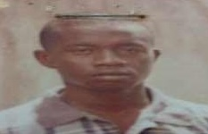
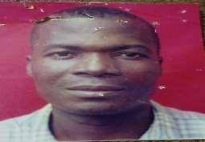
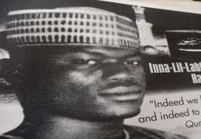
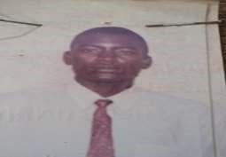
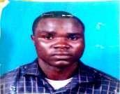
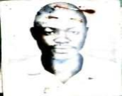
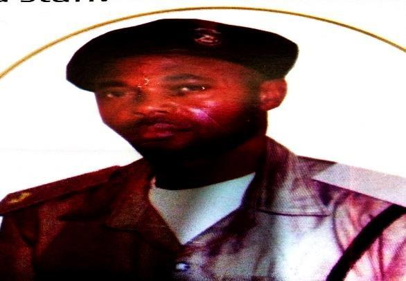
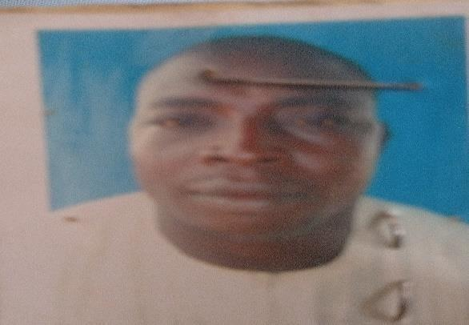
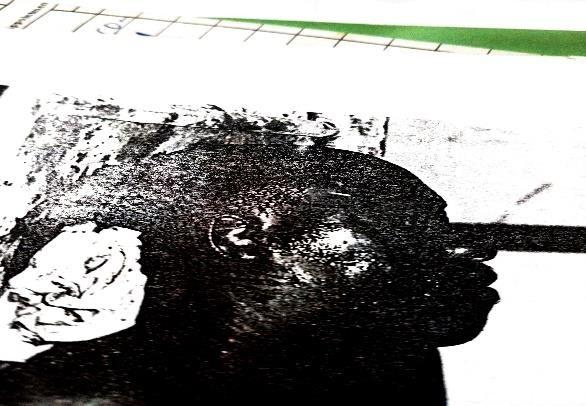
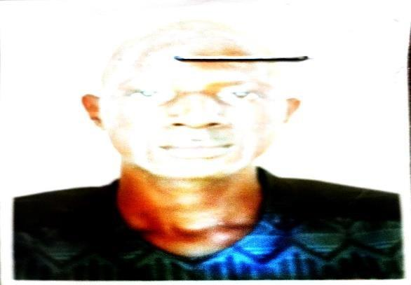
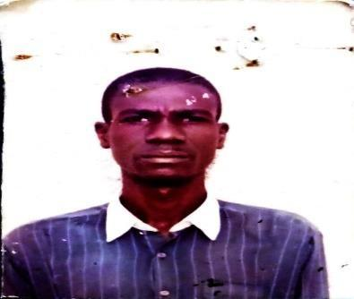
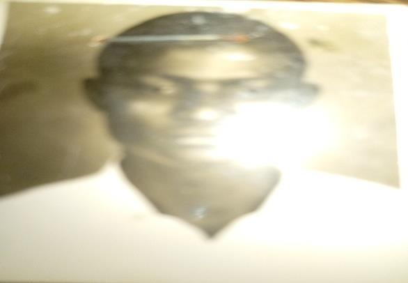
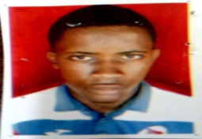
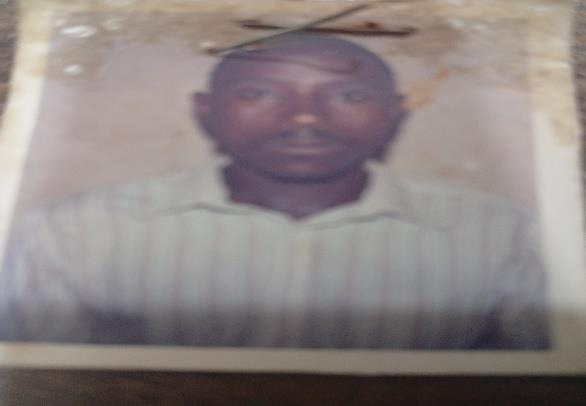
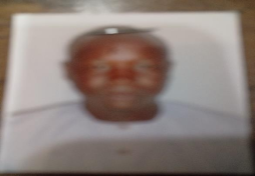
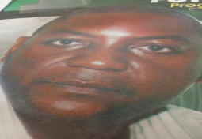
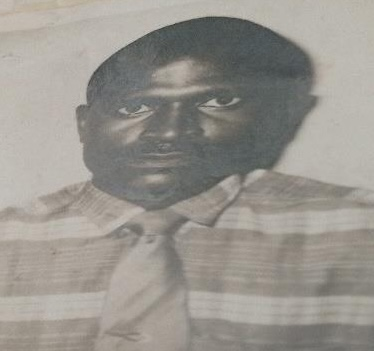
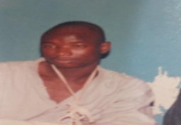
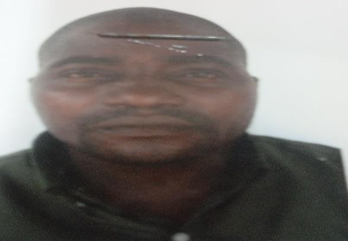
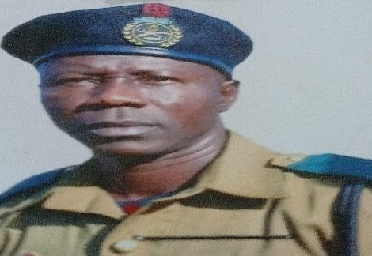
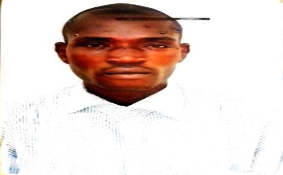
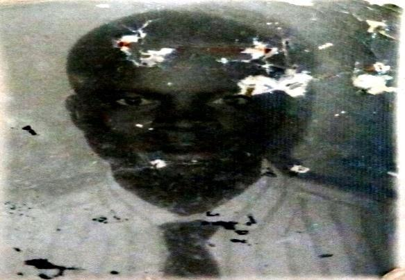
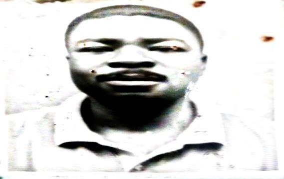
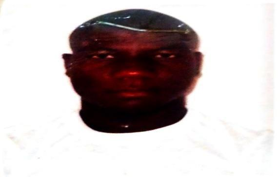
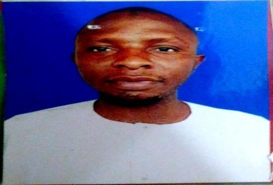
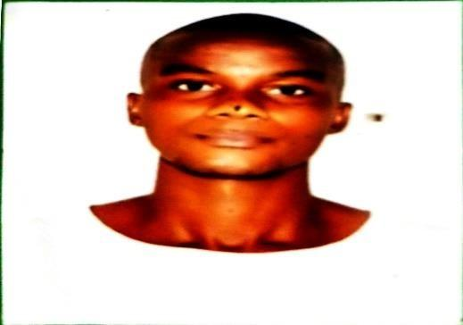
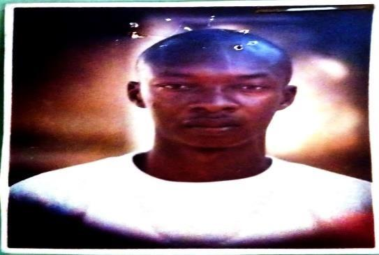
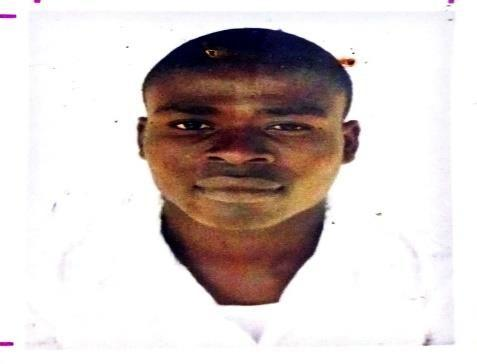
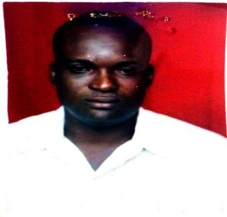
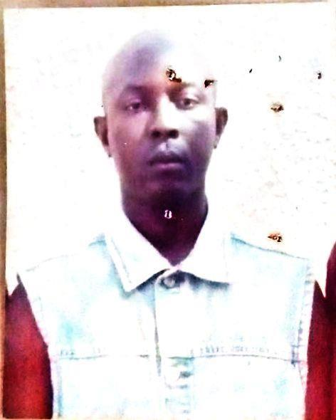
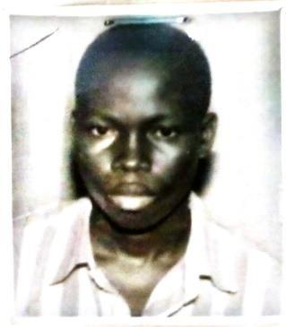
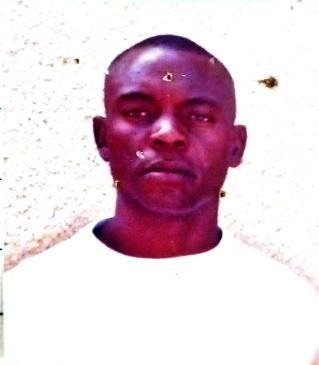
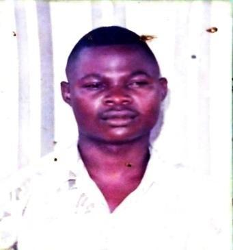
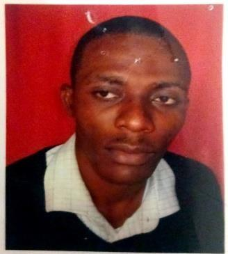
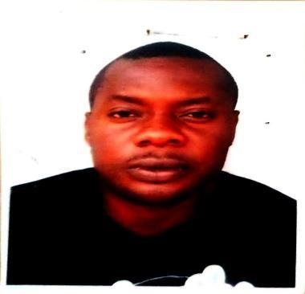
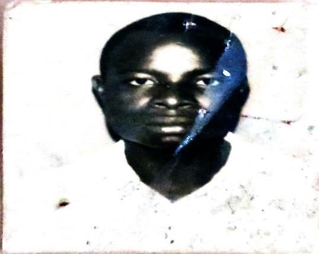
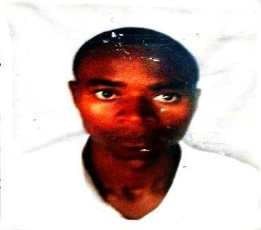
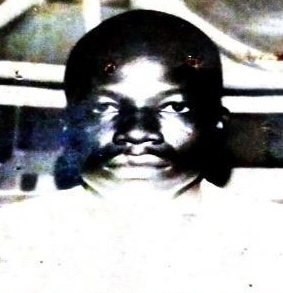
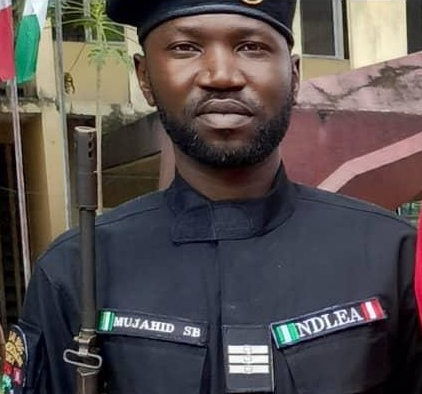
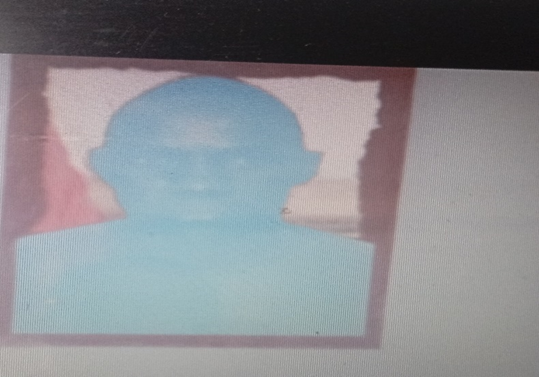
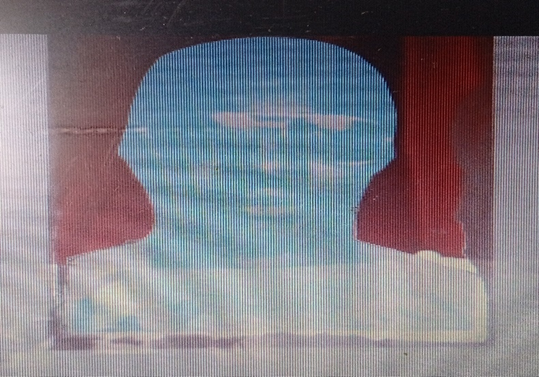
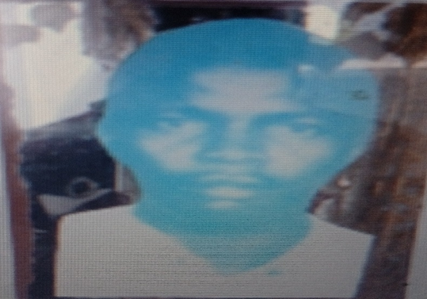
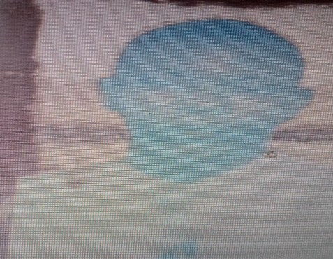
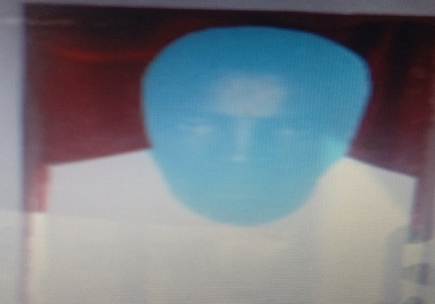
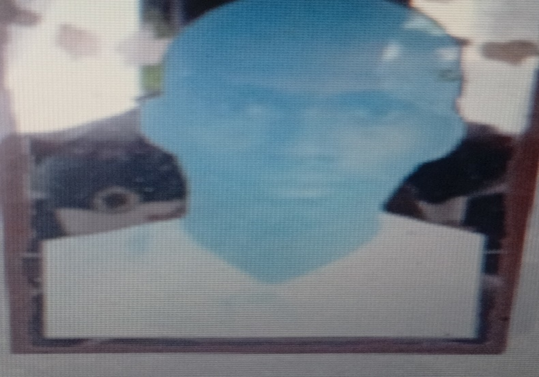
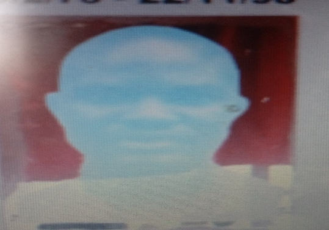
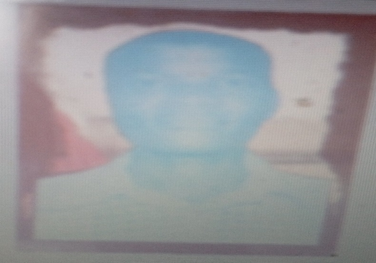
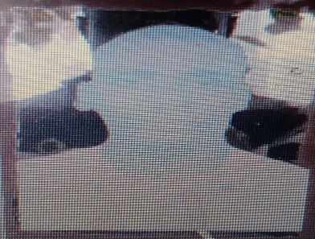
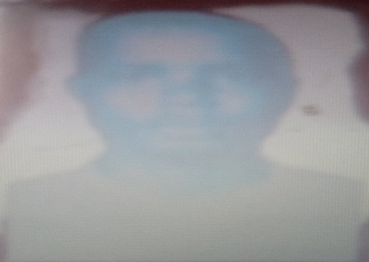
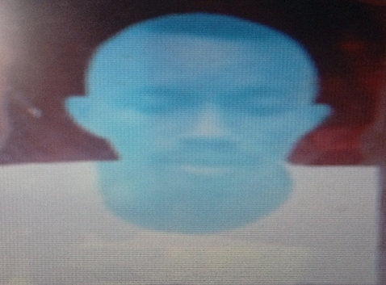
We remember your courage.
We honour your sacrifice.
We pledge to carry forward your legacy.
National Drug Law Enforcement Agency
Republic of Nigeria